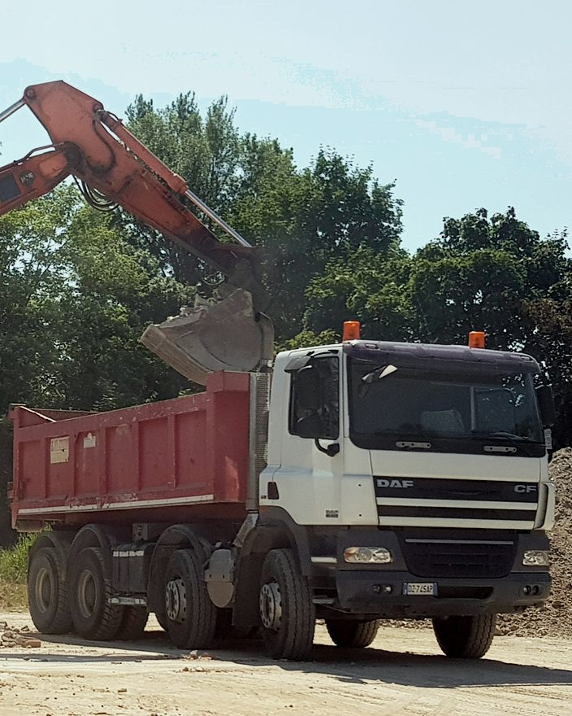
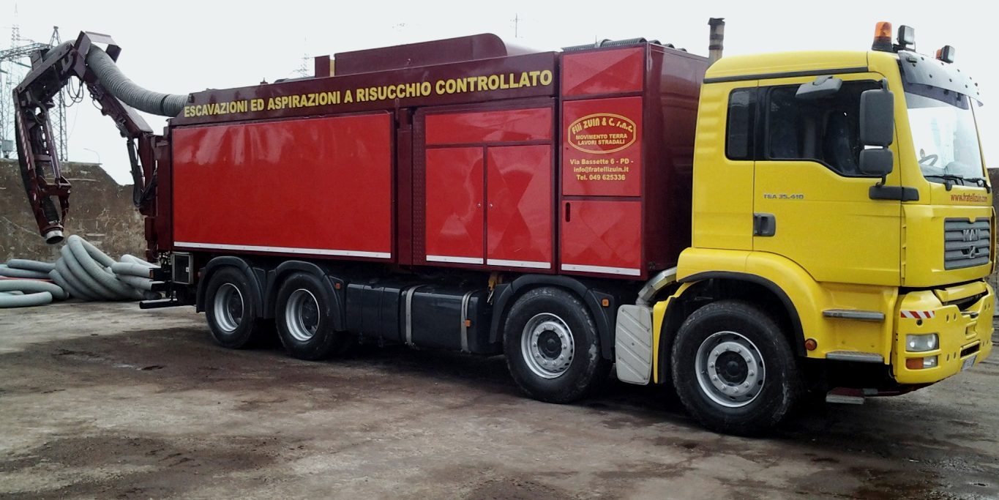
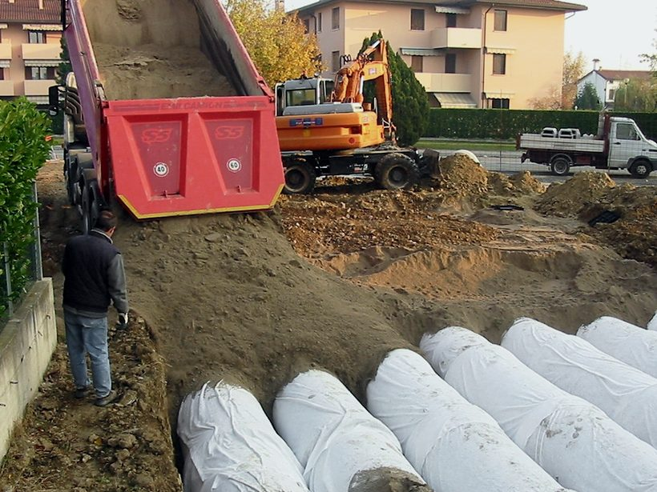
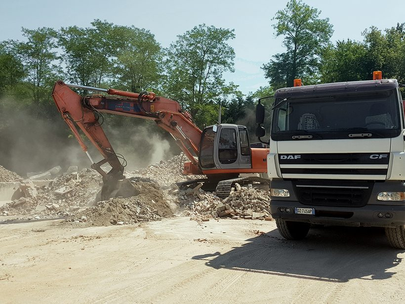
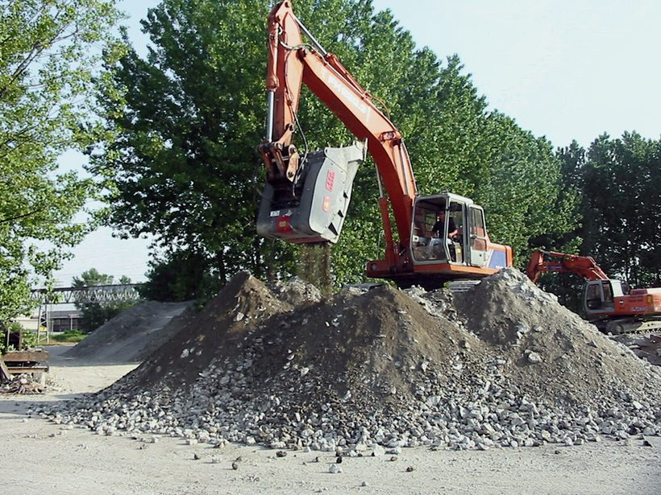
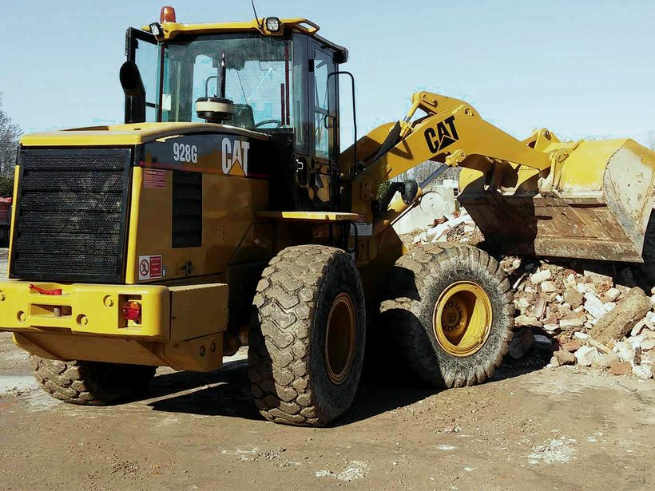
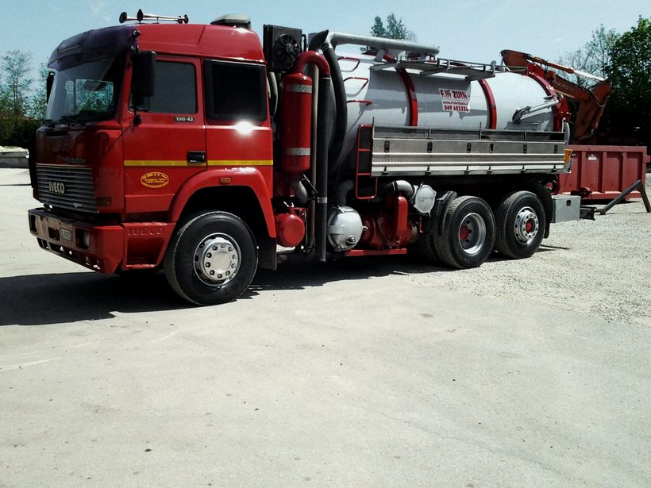
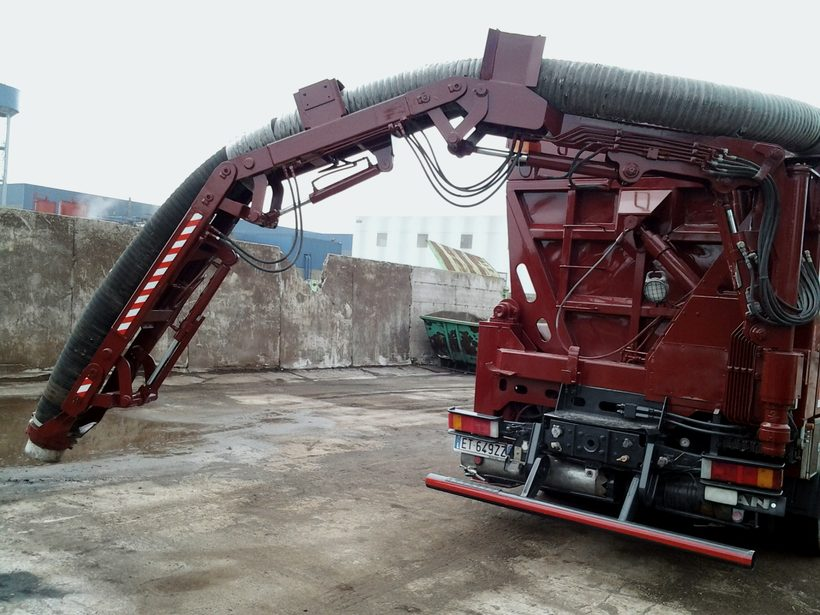

Movimento terra e lavori stradali, Padova Est
Scavi, cassoni scarrabili, strade e fognature a Padova, dal 1946
Impresa di famiglia, tre generazioni. Mezzi propri, dagli scarrabili della larghezza di un'automobile agli escavatori a risucchio. Attestazione SOA per i lavori pubblici. Il preventivo è gratuito.

1946La Ditta nasce nel cortile di casa dei tre fratelli Zuin, con il primo autocarro, un DOGE.
- 3generazioni di esperienza
- 2-25 m³cassoni scarrabili a noleggio
- 30-250 qautocarri da 30 a 250 quintali
- Attestazione SOAqualificazione per i lavori pubblici
- REA PD 82662iscritta alla Camera di Commercio di Padova
- ATECO 42.11costruzione di strade e autostrade

Escavatori a risucchio
Escavazioni ed aspirazioni a risucchio controllato
Scavi controllati e aspirazione di qualsiasi materiale: liquido, secco, solido e polveri, anche in luoghi confinati.
LiquidoSeccoSolidoPolveri
Per le fognature c'è anche l'autobotte combinata, per lo spurgo e il lavaggio con il sistema canal jet.
Portata, profondità di scavo e lunghezza del tubo: chiedetecele al telefono, per il vostro lavoro. Per una richiesta bastano luogo, materiale, quantità approssimativa e data.
oppure scrivete a info@fratellizuin.it
Lavori
Un'ampia gamma di servizi per tutti i vostri lavori
Per privati, condomini, imprese ed enti. Anche sistemazioni esterne di piccola entità.
Per casa, cantiere e azienda

Cassoni scarrabili da 2 a 25 m³Noleggio. Scarrabili anche di piccole dimensioni, della larghezza di un'automobile.Preventivo →
Scavi e movimento terraEscavatori cingolati, gommati e mini escavatori, mezzi moderni ed efficienti.Preventivo →
DemolizioniL'abbattimento delle strutture avviene con martelli demolitori e pinze idrauliche.Preventivo →
Ritiro di macerie e terraRitiro del materiale proveniente da demolizioni e scavi.Preventivo →
Fognature e spurgoFognature private, industriali e urbane: formazione, sistemazione, spurgo e lavaggio con il canal jet.Preventivo →
Escavatori a risucchioScavi controllati e aspirazione di liquidi, solidi e polveri, anche in luoghi confinati.Cosa aspira →
Strade, cortili e lavori pubblici
- Strade, marciapiedi, piste ciclabili e rotatorieAnche manutenzione di strade e autostrade.
- Cortili, passi carrai e aree verdiSistemazioni esterne anche di piccola entità: asfaltature, viali pedonali, calcestruzzo e autobloccanti.
- Urbanizzazioni e sottoserviziPer committenti pubblici e privati.
- Lavori pubblici con attestazione SOADati della Ditta e documenti per enti e imprese.
Chi siamo
Tre generazioni, dal cortile di casa
- 1946
L'inizio
La Ditta nasce nel primo dopoguerra dai tre fratelli Zuin, nel cortile della loro casa. Si comincia con il trasporto di materiale da costruzione e il primo autocarro, un DOGE; presto arrivano altri autocarri ed escavatori.
- 1968-69
L'evoluzione
Anche i figli entrano nella Società. Arriva la prima demolizione importante, l'ex Foro Boario di Padova, e poi altri lavori in città.
- Oggi
I tempi odierni
Tre generazioni di esperienza. Escavatori cingolati, gommati e mini escavatori, scarrabili anche della larghezza di un'automobile e gli escavatori a risucchio.
Lavori a Padova
- Ex Foro BoarioDemolizione, 1968-69
- Sede dell'Azienda del Gas, Via TriesteDemolizione
- Prato della ValleFormazione parziale dell'impianto di illuminazione
Richiedi un preventivo gratuito
049 625336Chiamateci, oppure scriveteci: vi rispondiamo con il preventivo.
Cosa scriverci
- L'indirizzo del lavoro, via e comune
- Che lavoro è: cassone, scavo, fognatura, cortile
- Una o due foto del posto
- Per quando vi serve
Per enti e imprese
Dati della Ditta e attestazione SOA
La Ditta F.lli Zuin & C. snc ha ottenuto l'attestazione di qualificazione all'esecuzione dei lavori pubblici dalle SOA.
Chiedi l'attestazione SOA- Ragione sociale
- Fratelli Zuin snc di Zuin Antonio, Luigi, Andrea & C.
- Partita IVA e codice fiscale
- 00259210284
- REA
- PD 82662
- Attività
- Costruzione di strade e autostrade, ATECO 42.11
- Sede legale
- Via Torre 164, 35129 Padova
- Sede operativa e amministrativa
- Via Bassette 6/A, 35129 Padova
Dove siamo
Via Bassette 6/A, Padova Est
Sede operativa e amministrativa, 35129 Padova. Dall'autostrada A4 uscite al casello di Padova Est: la sede è vicina al casello.
- Telefono
- 049 625336
- info@fratellizuin.it
- Fax
- 049 6458813
- Sede legale
- Via Torre 164, 35129 Padova